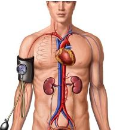

هل تعلم أن ارتفاع ضغط الدم من الأسباب الرئيسية للوفاة في العالم؟ والأسوأ من ذلك أنه قد يكون لديك دون أن تدرك ذلك! هذا هو السبب في أنه من المهم للغاية أن تعرف كيف تخفض ضغط الدم وتحافظ على صحة قلبك.
يحدث ارتفاع ضغط الدم عندما يتدفق الدم عبر الشرايين بمعدل أعلى مما ينبغي. هذا يضع ضغطًا غير ضروري على جسمك، مما يجعله حالة طبية خطيرة للغاية.
بشكل عام، إذا كان ضغط الدم لديك أكثر من 120/80، فأنت مصاب بارتفاع ضغط الدم. لمكافحة المرض وتعزيز صحتك، إليك بعض النصائح المؤكدة لخفض ضغط الدم.
الدواء الموصوف
يعتبر تناول الأدوية الموصوفة من الطرق الشائعة لخفض ضغط الدم. تأكد من قيامك بزيارات منتظمة لطبيبك لمراقبة ضغط الدم لديك وإخطاره بأي آثار جانبية وحالات قد تنشأ عن تناول الأدوية الموصوفة.
هل تخاف من الآثار الجانبية المسببة للإدمان والضارة للأدوية الموصوفة؟
هناك خيار آخر.
ببعض العلاجات الطبيعية فعالة أيضًا وفي نفس الوقت غير ضارة تمامًا بالصحة. على سبيل المثال، يعتبر ي منتجًا طبيعيًا لدعم وحماية القلب والأوعية الدموية. يمكنك قراءة المزيد عن المنتج هنا. .
والأفضل من ذلك الجمع بين استخدام الطب الحديث ونمط حياة صحي. إذا كنت تصر على الاستمرار في نفس نمط الحياة الذي كنت تعيشه قبل إصابتك بارتفاع ضغط الدم، فهناك الكثير الذي يمكن أن تفعله الأدوية والمكملات لك.
في الواقع، يمكن أن يكون تغيير بعض الأشياء في نمط حياتك كافيًا لك في كيفية خفض ضغط الدم. تتضمن بعض التغييرات في نمط الحياة ما يلي:
خسارة الوزن
أظهرت الدراسات أن ضغط الدم يزداد أيضًا عند زيادة الوزن. وينطبق الشيء نفسه على الاتجاه المعاكس: فكلما زاد وزنك، انخفض ضغط دمك. نسق مع طبيبك للتوصل إلى وزن مستهدف يمكنك تحديده لنفسك. يمكن لخسارة 10 أرطال أن تفعل المعجزات في ضغط الدم.
ستحتاج أيضًا إلى فحص محيط الخصر لديك أيضًا. مثل الوزن، كلما زاد حجم خصرك، ارتفع ضغط الدم لديك. يتعرض الرجال لخطر الإصابة بارتفاع ضغط الدم إذا كان محيط الخصر لديهم أكبر من 40 بوصة، بينما يبلغ 35 بوصة بالنسبة للنساء.
نظام غذائي سليم
مناسب نظام غذائي لارتفاع ضغط الدم. يحتاج أيضًا إلى اتباعه. تركز خطة الوجبة على تقليل كمية الدهون المشبعة والكوليسترول والملح (الصوديوم) في طعامك. كقاعدة عامة جيدة، اختر الحبوب الكاملة والفواكه والخضروات ومنتجات الألبان قليلة الدسم كإضافات جيدة لنظامك الغذائي.
للحصول على القائمة الكاملة للأطعمة والطرق الأخرى لخفض ضغط الدم بشكل طبيعي، ألق نظرة على تقرير ارتفاع ضغط الدم . وإلا فلنستمر ...
التمرين المنتظم
لن تؤدي التمارين المنتظمة إلى زيادة فرصك في فقدان الوزن فحسب، بل إنها تحسن الدورة الدموية وتقوي قلبك. أظهرت الدراسات أيضًا أن التمارين المنتظمة يمكن أن تحفز إنتاج أكسيد النيتريك في الدم. يساعد ذلك في الحفاظ على الأوعية الدموية مفتوحة ويمنع تراكم الترسبات.
إذن ما هي التمارين التي يجب أن تفعلها؟
- تعتبر تمارين القلب، مثل الركض أو ركوب الدراجات، هي الأكثر فاعلية. حاول إبقاء معدل ضربات قلبك أعلى من 100 نبضة في الدقيقة لمدة 40 دقيقة على الأقل كل يوم.
لا تحب الركض أو ركوب الدراجة؟ لا مشكلة. هناك بعض البدائل البسيطة.
- انخرط في أنشطة رياضية معتدلة مثل كرة الريشة وتنس الطاولة والصحن الطائر. هذه مهام ممتعة للغاية ستحافظ على معدل ضربات قلبك لساعات متتالية دون أن تدرك ذلك.
- في الواقع، يمكن أن تؤدي تمارين القلب والأوعية الدموية البسيطة مثل تمشية الكلب، وصعود الدرج بدلاً من ركوب المصاعد، والقيام بالأعمال المنزلية إلى تحسين الدورة الدموية.
بغض النظر عن التمرين الذي تختاره، فإن المفتاح هو البقاء نشطًا والاستمتاع. ربما تكون هذه إحدى أبسط الطرق لخفض ضغط الدم المرتفع.
كف عن التدخين
يرفع النيكوتين من ضغط الدم. إذا قلصت السجائر، فقد يساعد ذلك في خفض ضغط الدم.
"التقليل من تناول الكافيين
في حين أن تناول القهوة بكميات صغيرة يُعد مفيدًا لنشاط جسمك، إلا أن تجاوز جرعتك اليومية ولو بشكل طفيف سيؤدي إلى ارتفاع ضغط الدم وعدم انتظام ضربات القلب، مما يؤدي إلى مشاكل في النوم والقلق والتهيج وعدم الارتياح. علمًا بأن الكمية الموصى بها يوميًا للشخص البالغ هو 1 أمريكانو أو 2-3 إسبريسو أو قطعة شوكولاتة.
الخصائص الفردية مهمة أيضًا: فالأشخاص الذين يعانون من نوبات الهلع وعدم انتظام ضربات القلب وارتفاع ضغط الدم والسكري والقلق الشديد وتقلب المزاج يجب ألا يشربوا الكثير من القهوة. ولتجنب مخاطر الإصابة بارتفاع ضغط الدم وأمراض القلب والأوعية الدموية المرتبطة بها تمامًا، يوصى بالتخلي تمامًا عن تناول الكافيين".
الحد من التوتر
كما وجد أن الإجهاد يزيد من ضغط الدم. هناك طريقتان للتعامل مع التوتر.
1 - ببساطة تخلص من التوترات التي تسبب المواقف في حياتك. أحد الأمثلة على ذلك هو إيقاف تشغيل
الإشعارات على هاتفك، عندما تكون خارج العمل أو تحتاج إلى الاسترخاء.
2 - تعلم كيفية إدارة
التوتر بشكل فعال من خلال إيجاد طرق تساعدك على التعامل مع المواقف الصعبة. يمكن لأشياء مثل
التدليك واليوجا والتأمل أن تساعد في تقليل مستويات التوتر وضغط الدم لديك.
وفقًا للدراسات العلمية، يلعب التأمل دورًا كبيرًا في الوقاية من ارتفاع ضغط الدم وخفضه، لما له من خصائص تساعد على الاسترخاء. يحافظ على ضغط الدم تحت السيطرة، ويحسن مزاجك، ويجعلك تشعر بتحسن تجاه نفسك. سيؤدي الإجراء البسيط المتمثل في إغلاق عينيك والتنفس بعمق إلى إحداث تغيير كبير في ضغط الدم الانقباضي.
بالتأكيد، هذه النصائح لكيفية خفض ضغط الدم تتضمن تضحيات معينة ؛ ولكن إذا كان ذلك يعني أن تعيش حياة أكثر صحة وأطول وأكثر إفادة، فأنت مدين لك ولعائلتك بالحفاظ على صحة قلبك.